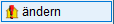
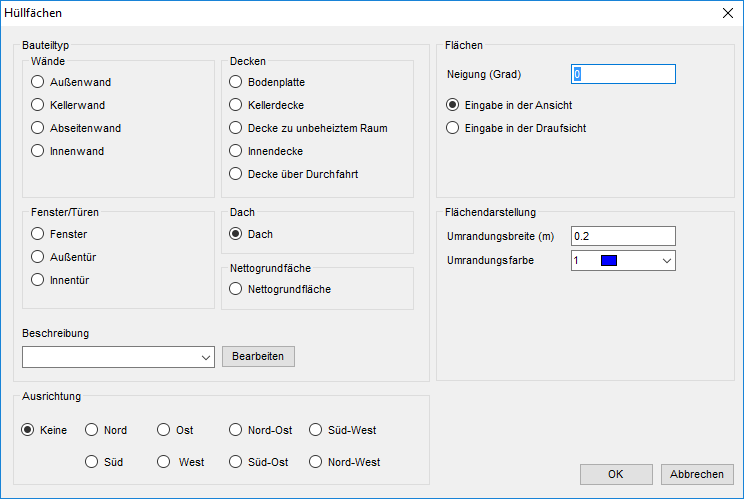
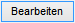
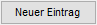
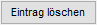

")

Attribute eines in der Zeichnung definierten Bauteils ändern. Der Bauteiltyp kann nicht geändert werden.
§Klicken Sie die Flächenbezeichnung des gewünschten Bauteils an. [Flächenbezeichnung anklicken].
Der Dialog Hüllflächen wird geöffnet.
§Ändern Sie die gewünschten Einstellungen und klicken Sie im Dialog auf OK, um die Änderungen zu übernehmen.
Die Einstellungen wurden geändert. Sie können sofort ein weiteres Bauteil ändern.
|
Tipp: |
|
Wenn gradlinig begrenzte Flächen geändert werden sollen, können Sie die Funktion [Konst1 | Dehnen] benutzen. Sobald Sie das Hüllflächenprogramm aufrufen, werden alle geänderten Flächen korrigiert. |

Optionen im Dialog "Hüllflächen"
Konfiguration eines neuen Hüllflächen-Bauteils bzw. Änderung einzelner Bauteilattribute für das in der Zeichnung gewählte Hüllflächen-Bauteil.
 |
Bauteiltyp
Wände; Fenster/Türen; Decken; Dach Auswahl einer Bauteilart. Nettogrundfläche Berücksichtigt die Nettogrundfläche für NWG DIN 18599. |
Beschreibung
Auswahl eines Bauteiltextes.
In der Auswahlliste stehen nur die für den gewählten Bauteiltyp verfügbaren Bauteiltexte zur Verfügung.  Hinzufügen oder Entfernen von Textvorlagen für Bauteilbeschreibungen. Für jeden Bauteiltyp können beliebig viele Bauteiltexte bereitgestellt werden. Öffnet den Dialog Bauteiltexte.
Bauteiltyp Auswahl des Bauteiltyps, für den ein Bauteiltext angelegt oder gelöscht werden soll.  Anlegen eines neuen Bauteiltextes für den gewählten Bauteiltyp. Öffnet den Dialog Flächenermittlung zur Eingabe der Bauteilbeschreibung (Bauteiltext). Siehe auch: Sonderzeichen einfügen; [Konst 1 | Texte | Sonderzeichen].  Löscht den in der Liste der Bauteiltexte markierten Eintrag ohne Rückfrage. |

Ausrichtung
Exposition der Hüllfläche.
Keine: Ausrichtung wird nicht berücksichtigt. |
Flächen
Neigung und Darstellungsart (Ansicht/Draufsicht) des Hüllflächenbauteils. Die Angaben wirken sich direkt auf die Flächenberechnung aus.
Neigung (Grad) Angabe der Flächenneigung in Grad. Je größer die Neigung, desto größer die ermittelte Fläche. Eingabemodus:
Beispiel
|
Flächendarstellung
Umrandungsbreite (m) Angabe der Umrandungsbreite in Meter. Umrandungsfarbe Stiftauswahl für die Flächenumrandung.
|